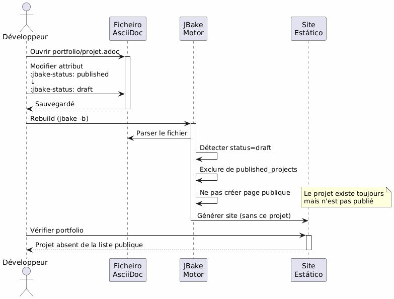
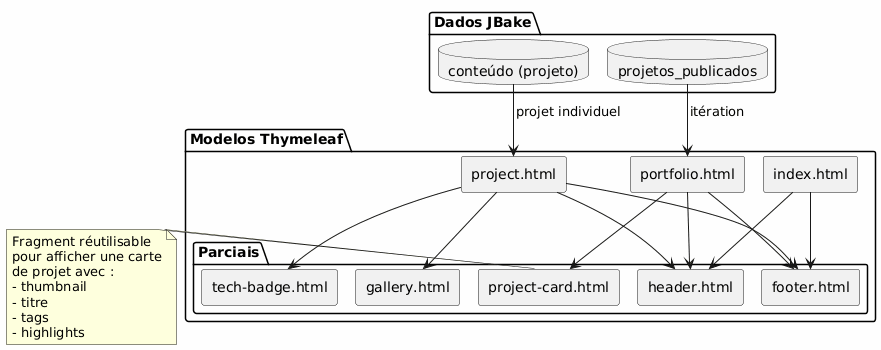
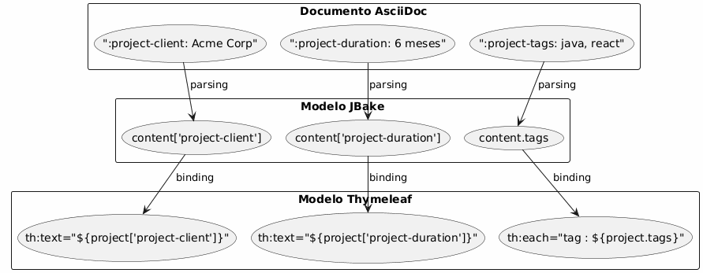
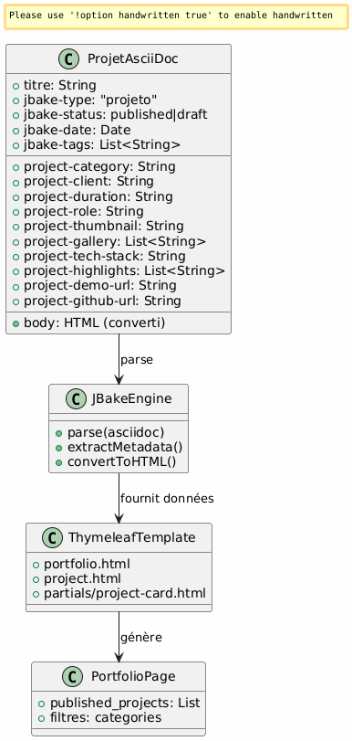
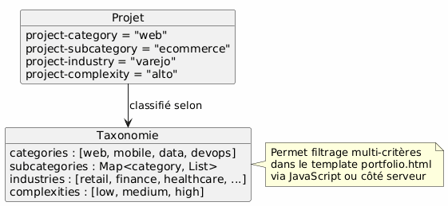

Architecture Portfolio JBake - Visão e Casos de Uso
Publié le 15 January 2026
Visão arquitetural
Princípio orientador
A arquitetura baseia-se no princípio de separação de preocupações:
-
Conteúdo : ficheiros AsciiDoc estruturados com metadados ricos
-
Apresentação : templates Thymeleaf reutilizáveis
-
Dados : modelo extraído automaticamente pelo JBake a partir dos atributos AsciiDoc
-
Style : Bootstrap 5 para consistência visual
Escolha estratégica : AsciiDoc para o portfólio
| Critério | vantagem |
|---|---|
Coerência |
Mesmo formato que os artigos de blog |
Metadados |
Atributos estruturados e extensíveis ( |
Manutenabilidade |
Edição simples em texto, versionável Git |
Flexibilidade |
Pode conter conteúdo rico (tabelas, código, imagens) |
Modelagem |
JBake extrai automaticamente os atributos para o Thymeleaf |
modelo de dados
Cada projeto de portfólio é um documento AsciiDoc com:
-
Metadados de cabeçalho : informações estruturadas (cliente, duração, tecnologias, etc.)
-
Corpo do documento: descrição narrativa, desafios, soluções, resultados
-
Atributos personalizados : prefixados`project-*`para extração automática
Casos de Uso Detalhados
UC1 : Adicionar um elemento ao portfólio
Fluxo nominal
Failed to generate image: PlantUML preprocessing failed: [From <input> (line 4) ] @startuml skinparam backgroundColor #FEFEFE actor Développeur as dev participant "Editor ^^^^^ Syntax Error? (Assumed diagram type: sequence) @startuml skinparam backgroundColor #FEFEFE actor Développeur as dev participant "Editor Text" as editor participant "Arquivo\nAsciiDoc" as file participant "JBake\nEngine" as jbake participant "Site Estático" as site dev -> editor : Créer nouveau fichier activate editor editor -> file : portfolio/nouveau-projet.adoc activate file dev -> editor : Rédiger en-tête avec métadonnées\n(titre, type=project, status=published,\nattributs project-*) dev -> editor : Rédiger contenu narratif\n(contexte, défis, solutions) dev -> editor : Ajouter images dans assets/img/portfolio/ editor -> file : Sauvegarder deactivate editor dev -> jbake : Lancer build (jbake -b) activate jbake jbake -> file : Lire et parser jbake -> jbake : Extraire métadonnées jbake -> jbake : Convertir AsciiDoc → HTML jbake -> jbake : Appliquer template project.html jbake -> jbake : Ajouter à la liste portfolio.html jbake -> site : Générer pages statiques deactivate jbake dev -> site : Vérifier résultat activate site site --> dev : Afficher projet deactivate site @enduml
modelo do arquivo a ser criado
O desenvolvedor cria`content/portfolio/nom-projet.adoc`com uma estrutura padronizada:
-
Cabeçalho com todos os atributos necessários
-
Seções normalizadas (Contexto, Desafios, Soluções, Resultados)
-
Nomenclatura coerente das imagens
Pontos de validação
-
Os atributos obrigatórios estão presentes (
jbake-type,jbake-status,project-thumbnail) -
As imagens referenciadas existem em`assets/img/portfolio/`
-
O build JBake é bem-sucedido sem erro
-
O projeto aparece na página do portfólio
-
A página individual do projeto aparece corretamente
UC2: Remover um item do portfólio
fluxo nominal
Failed to generate image: PlantUML preprocessing failed: [From <input> (line 5) ] @startuml skinparam backgroundColor #FEFEFE actor Développeur as dev participant "Sistema\nArquivos" as fs participant "JBake ^^^^^ Syntax Error? (Assumed diagram type: sequence) @startuml skinparam backgroundColor #FEFEFE actor Développeur as dev participant "Sistema\nArquivos" as fs participant "JBake Motor" as jbake participant "Site\nestático" as site database "Cache\nJBake" as cache dev -> fs : Supprimer portfolio/projet-ancien.adoc activate fs fs --> dev : Fichier supprimé deactivate fs dev -> fs : (Optionnel) Supprimer images associées\nassets/img/portfolio/projet-ancien-* activate fs fs --> dev : Images supprimées deactivate fs dev -> cache : Nettoyer cache JBake activate cache cache --> dev : Cache vidé deactivate cache dev -> jbake : Rebuild complet (jbake -b) activate jbake jbake -> jbake : Scanner content/portfolio/ jbake -> jbake : Projet absent → non généré jbake -> jbake : Régénérer portfolio.html\n(sans le projet supprimé) jbake -> site : Déployer nouveau build deactivate jbake dev -> site : Vérifier activate site site --> dev : Projet absent de la liste deactivate site @enduml
Estratégia alternativa : arquivamento
Em vez de excluir definitivamente, possibilidade de criar uma pasta`content/portfolio/archive/` :
-
Mover o arquivo em vez de excluí-lo
-
Permite restaurar facilmente
-
Mantenha o histórico do Git mais claro
Limpeza de recursos
-
Verificar imagens órfãs em`assets/img/portfolio/`
-
Remover as imagens não referenciadas por outros projetos
-
Limpar o cache JBake para evitar referências fantasma
UC3 : Definir como não publicado (rascunho)
Fluxo nominal

Estados possíveis

Casos de uso típicos
-
Projeto em fase de redação : criar como rascunho, publicar quando pronto
-
Projeto confidencial temporariamente : passar para draft durante o acordo do cliente
-
Atualização principal : mudar para rascunho, editar, republicar
-
A/B testing : duplicar em rascunho, testar, publicar a melhor versão
Arquitetura de Templating
Estratégia de templates reutilizáveis

Padrão de extração de dados
JBake transforma automaticamente os atributos AsciiDoc em propriedades acessíveis no Thymeleaf :

Convenções de nomenclatura
-
Atributos do projeto : prefixo`project-*` (ex:
project-client,project-tech-stack) -
Ficheiros: kebab-case (ex:`ecommerce-platform.adoc`)
-
Imagens : prefixo nome-projeto (ex:`ecommerce-platform-thumb.jpg`)
-
modelos : nome funcional (ex:`project-card.html`,
tech-badge.html)
Fluxo de Publicação
Pipeline de desenvolvimento

Ambientes
| Ambiente | uso | Status aceito |
|---|---|---|
Local |
Desenvolvimento e pré-visualização |
rascunho, publicado |
Encenação |
Validação pré-produção |
publicado apenas |
produção |
Site público |
publicado apenas |
extensibilidade
Adição de novos atributos
Para enriquecer o modelo de dados, simplesmente adicionar novos atributos prefixados`project-*`:
-
project-awards: Prêmios e reconhecimentos -
project-testimonial: Citação do cliente -
project-team-size: Tamanho da equipe -
`project-budget-range`faixa orçamentária
Estes atributos ficam automaticamente disponíveis nos templates sem modificação no motor JBake.
Categorização avançada

Boas Práticas
Organização dos arquivos
-
Um arquivo = um projeto : evitar misturar vários projetos
-
Imagens na pasta dedicada :`assets/img/portfolio/nom-projet/`
-
Nomenclatura consistente : facilita pesquisa e manutenção
-
Versioning Git : rastreamento completo das modificações
Gestão de conteúdo
-
Status de rascunho padrão : publicar somente quando pronto
-
Revisão pré-publicação : validação de qualidade e confidencialidade
-
Metadados completos : preencher todos os campos pertinentes
-
Conteúdo narrativo rico : não se limitar aos metadados
Desempenho
-
Otimizar imagens : compressão antes do commit
-
Pagination se necessário : se >20 projetos
-
Lazy loading : imagens das galerias carregadas sob demanda
-
Cache do navegador : cabeçalhos apropriados para assets
Conclusão
Esta arquitetura permite :
-
Simplicidade de uso : adicionar um projeto = criar um arquivo de texto
-
Flexibilidade : extensível via novos atributos
-
Manutenabilidade : separação conteúdo/apresentação
-
Rastreabilidade : versionamento Git completo
-
Automação : build e implantação contínua possível
A escolha do AsciiDoc garante a coerência com o resto do site, oferecendo ao mesmo tempo a riqueza dos metadados necessários a um portfólio profissional.